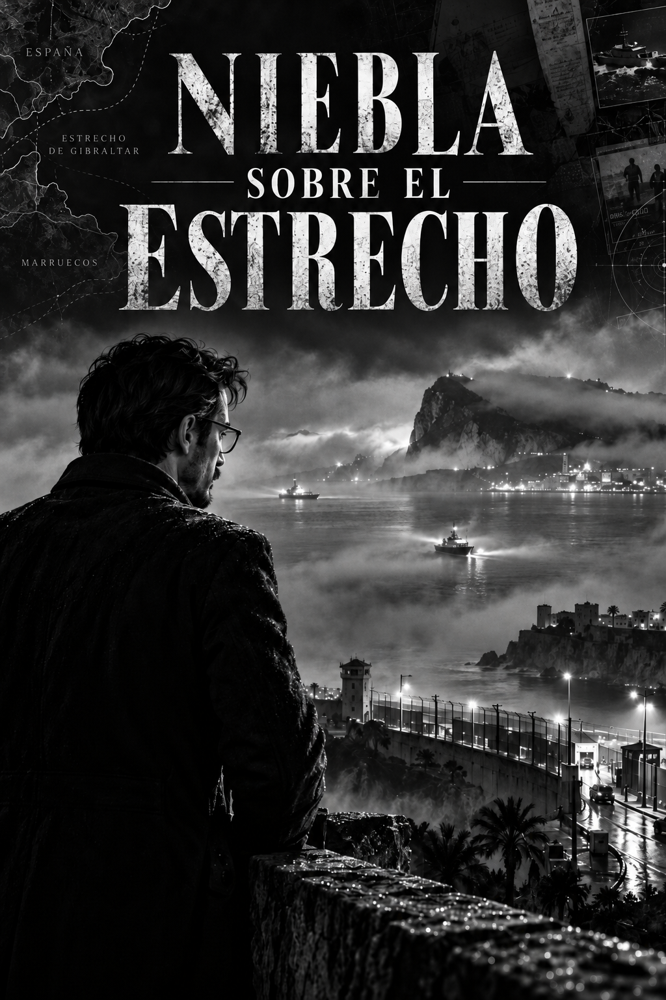

Narrativa documental
Niebla sobre el Estrecho

I. A ras de suelo
Víctor Drave llegó a Ceuta el miércoles 29 de julio. Tenía que impartir una conferencia al día siguiente por la tarde y había aceptado aprovechar la mañana para visitar una pequeña empresa industrial cuyo propietario conocía desde hacía años.
No era la primera vez que estaba en la ciudad, aunque tampoco podía decir que la conociera. Sus viajes anteriores habían sido breves: hotel, reunión, comida, regreso. Ceuta tenía para él esa extraña condición de los lugares que uno reconoce sin haber llegado nunca a habitar. El puerto, las fachadas frente al mar, el tráfico contenido en unas calles que parecían desembocar siempre demasiado pronto en otra parte.
La empresa estaba cerca del Tarajal.
El propietario había insistido en recogerlo personalmente. Durante el trayecto hablaron de lo que Drave esperaba: costes, dificultades para contratar personal, transporte de mercancías, dependencia de la Península. Nada que justificara haber llevado un ordenador. Drave hacía tiempo que había descubierto que las conversaciones interesantes sobre una empresa rara vez empezaban mirando una hoja de cálculo.
Poco antes de llegar, el conductor redujo la velocidad. Había más policía de la que Drave esperaba.
—¿Pasa algo?
El empresario miró hacia la carretera.
—Llevamos unos días con gente intentando entrar a nado.
Lo dijo sin especial preocupación, como quien explica un atasco provocado por unas obras.
Drave miró hacia el mar. Desde allí apenas podía distinguir el espigón.
—¿Es habitual?
—En verano pasa.
La visita duró más de una hora. Recorrieron las instalaciones, hablaron con el responsable de producción y terminaron en una oficina demasiado pequeña para las cuatro personas que habían acabado entrando. A media mañana, uno de los empleados abrió la puerta sin llamar.
—Están entrando otra vez.
El propietario levantó la vista.
—¿Cuántos?
—No sé. Bastantes.
La conversación se interrumpió durante unos segundos y después continuó, aunque ya de otra manera. Un teléfono vibró sobre la mesa. Alguien recibió un vídeo. El responsable de producción salió de la oficina y regresó unos minutos después. Dos trabajadores se acercaron a una ventana desde la que tampoco se veía la frontera.
—Dicen que están entrando por el espigón.
El propietario cogió su móvil.
—¿Otra vez?
Nadie respondió. La reunión fue deshaciéndose poco a poco, sin que nadie decidiera formalmente terminarla.
Cuando salieron al exterior había personas caminando por la carretera en dirección al interior de Ceuta. La mayoría eran jóvenes. Algunos llevaban la ropa mojada y uno caminaba descalzo.
Drave tardó unos segundos en relacionarlos con lo que acababa de escuchar.
—¿Han cruzado ahora?
—Supongo.
Pasó un vehículo policial y poco después otro. El empresario hizo una llamada mientras Drave se apartaba unos metros para consultar el teléfono. Las primeras noticias hablaban de centenares de personas intentando alcanzar Ceuta desde Marruecos, muchas de ellas a nado por la zona del Tarajal.
Todavía no le pareció una crisis. Era un problema fronterizo serio que estaba ocurriendo demasiado cerca.
—Será mejor que volvamos —dijo el empresario.
El tráfico había cambiado. No estaba bloqueado, pero circulaba con dificultad. Había más personas en las aceras y grupos que avanzaban sin una dirección evidente. Algunos parecían saber adónde iban; otros simplemente seguían a quienes tenían delante.
Drave vio a un muchacho que no debía de tener más de dieciséis años detenerse junto a una pared. Estaba empapado. Se quitó una zapatilla, la puso boca abajo y esperó a que saliera el agua. Cuando volvió a calzársela, miró alrededor durante unos segundos y se acercó a ellos.
—¿El centro?
Drave señaló en la dirección que creía correcta.
—Por allí.
El muchacho asintió y siguió andando.
Fue un encuentro de apenas unos segundos. A unos metros, otro joven hablaba por teléfono y gesticulaba mientras intentaba explicar dónde estaba. Más adelante caminaban tres personas con la ropa pegada al cuerpo por el agua.
Vistas por separado, ninguna de aquellas escenas permitía comprender lo que estaba sucediendo. Lo extraordinario era que, a medida que avanzaban, seguían apareciendo más.
El empresario encendió la radio. Las informaciones todavía eran confusas. Se hablaba de entradas por mar, de personas bordeando el espigón y de fuerzas de seguridad desplazadas hacia la frontera. Las cifras cambiaban de una noticia a otra.
—Esto no es normal —dijo finalmente.
Era la primera vez aquella mañana que Drave le escuchaba decirlo.
A las doce y media recibió un mensaje de la organización de la conferencia. Le pedían que esperara. No la cancelaban todavía, pero estaban valorando la situación.
Drave contestó que no había problema.
Media hora después recibió otro. Esta vez sí la cancelaban.
La decisión le pareció lógica. En aquel momento la ciudad tenía problemas bastante más urgentes que escuchar a alguien hablar de finanzas.
Llamó al hotel. Le dijeron que podía regresar sin dificultad, aunque le recomendaron evitar determinadas zonas. El empresario insistió en llevarlo.
Durante el trayecto ya no hablaron de la empresa.
La radio intentaba ordenar lo que estaba ocurriendo. Las primeras estimaciones habían quedado obsoletas en cuestión de minutos. Lo que había empezado con grupos entrando a nado estaba adquiriendo otra dimensión. Circulaban vídeos de personas atravesando accesos fronterizos y de concentraciones al otro lado.
El propietario conducía sin apartar la vista de la carretera.
—No entiendo cómo puede haber tanta gente ahí de repente.
Drave tampoco tenía una respuesta. Miró el teléfono. Algunos medios hablaban ya de convocatorias difundidas a través de las redes sociales. Otros repetían imágenes grabadas desde Marruecos en las que se veían grupos avanzando hacia la frontera.
Guardó el móvil.
Al llegar al hotel preguntó por las conexiones para regresar a Tenerife aquella misma tarde.
La recepcionista consultó la pantalla. Podía intentar llegar a Algeciras y enlazar después con un vuelo, pero los horarios convertían la operación en una carrera con demasiadas posibilidades de acabar durmiendo en un aeropuerto. La alternativa razonable era conservar el viaje previsto para el día siguiente.
Drave decidió quedarse.
Subió a la habitación, dejó la chaqueta sobre una silla y encendió el televisor.
Entonces vio desde otra perspectiva la mañana que acababa de vivir.
Las imágenes aéreas mostraban algo que desde una carretera próxima al Tarajal resultaba imposible percibir. Ya no eran pequeños grupos dispersos. La entrada se extendía por diferentes puntos y el número de personas crecía con una velocidad que hacía inútiles las cifras que aparecían en pantalla.
Volvió a coger el teléfono. Los vídeos se acumulaban: personas nadando o corriendo, familias con niños, jóvenes que avanzaban por carreteras que Drave acababa de recorrer y agentes intentando contener grupos que parecían rehacerse unos metros más allá.
El mismo lugar que había atravesado aquella mañana se había convertido en el centro de todos los informativos.
Drave reconoció una carretera y después una rotonda. Durante unos segundos tuvo la absurda sensación de que la televisión estaba mostrando un sitio distinto.
Él había estado allí, pero no había visto aquello.
Había visto a un joven vaciando una zapatilla, a otro hablando por teléfono, algunos coches de policía y grupos de personas caminando hacia la ciudad. Desde el suelo, una crisis de aquella magnitud podía parecer una sucesión de escenas pequeñas.
La escala sólo aparecía cuando alguien conseguía mirar desde arriba.
A media tarde dejó de intentar seguir las cifras. Cada medio ofrecía una diferente y todas quedaban antiguas demasiado pronto. El Gobierno anunció refuerzos. Los servicios de emergencia estaban desbordados. Los comercios de algunas zonas cerraban y las imágenes mostraban a personas exhaustas en las playas y en las calles.
Después empezaron a llegar las noticias de muertos.
Drave bajó el volumen.
Hasta entonces había seguido los acontecimientos con la distancia con la que se observa una crisis desde una pantalla. Las cifras podían ser enormes y, sin embargo, seguir siendo cifras.
Una muerte hacía algo distinto con ellas.
Durante un rato continuó mirando la televisión sin escuchar realmente lo que decía el periodista. Se levantó para ir al baño, pero se quedó de pie a mitad de la habitación. No recordaba qué iba a hacer. Miró la pantalla otra vez y terminó acercándose a la ventana.
Desde allí veía los edificios próximos, una parte del puerto y el mar al fondo. Nada de aquello permitía adivinar lo que estaba sucediendo a pocos kilómetros.
Volvió a mirar el teléfono. Tenía varios mensajes preguntándole si estaba bien.
Llamó a casa. Explicó que sí, que la conferencia se había suspendido y que regresaría al día siguiente como estaba previsto. Cuando le preguntaron qué estaba pasando, tardó unos segundos en responder.
—No lo sé muy bien.
Era la única respuesta que podía dar.
Había estado cerca de donde había comenzado todo y, sin embargo, buena parte de lo que sabía lo había aprendido después por televisión.
Aquella noche cenó en el hotel.
En las mesas cercanas se hablaba casi exclusivamente de la frontera. Las versiones se multiplicaban.
Un camarero aseguraba que había muchísima gente esperando todavía en Marruecos. Un cliente decía que todo había empezado por una sentencia judicial que se había interpretado mal. Otro hablaba de vídeos difundidos durante los días anteriores. Alguien culpaba a las mafias.
Drave escuchaba sin intervenir.
Las explicaciones no eran necesariamente incompatibles. Un mensaje difundido en redes podía generar una expectativa, las redes dedicadas al tráfico de personas podían aprovecharla y miles de individuos podían desplazarse hacia el mismo lugar convencidos de que durante unas horas sería posible cruzar. Si la concentración superaba todas las previsiones, las fuerzas desplegadas podían verse desbordadas.
No resolvía todos los interrogantes, pero explicaba razonablemente el caos que había presenciado.
Lo difícil era aceptar su dimensión.
Antes de subir a la habitación volvió a consultar las noticias. Seguían llegando imágenes, cifras y testimonios. Leyó durante unos minutos y dejó el teléfono sobre la mesa.
Había tenido suficiente por aquel día.
A la mañana siguiente, camino del puerto, pasó buena parte del trayecto mirando por la ventanilla.
En algún momento recordó al muchacho de la zapatilla mojada y su pregunta.
¿El centro?
No sabía si había entendido correctamente sus indicaciones ni dónde habría terminado aquella tarde. Tampoco tenía forma de averiguarlo.
En el ferry, Ceuta fue reduciéndose poco a poco detrás de él hasta convertirse en una franja de edificios recortada contra la costa.
Sacó el teléfono.
Había nuevas cifras, nuevas declaraciones y nuevos vídeos. Leyó algunos titulares y guardó el móvil.
Cuando llegó a Tenerife lo esperaban el trabajo, varias llamadas pendientes y los asuntos que había dejado para después del viaje. Durante los días siguientes siguió las noticias sobre Ceuta con menos frecuencia. Después dejó de hacerlo.
Lo ocurrido conservaba demasiadas incógnitas para quien quisiera reconstruir cada hora de aquella jornada, pero la explicación general parecía comprensible: durante los días anteriores habían circulado mensajes y rumores que animaban a dirigirse hacia la frontera; una multitud extraordinaria había respondido a ellos y la situación había terminado desbordando los medios disponibles.
Drave no tenía ninguna razón para seguir ocupándose del asunto.
Y no lo hizo.
II. Algo no encaja
El 9 de septiembre, Víctor Drave llevaba varios días sin leer nada sobre Ceuta.
Durante agosto había seguido algunas noticias: las devoluciones, los problemas de alojamiento, las discusiones sobre la respuesta del Gobierno. Después había dejado de hacerlo. Lo que había visto el 30 de julio conservaba la intensidad de las cosas presenciadas por casualidad, pero había ido perdiendo espacio frente a asuntos más próximos.
Aquella mañana, mientras revisaba la prensa, encontró una noticia: el Gobierno había publicado los informes y comunicaciones relacionados con la crisis de Ceuta. El enlace llevaba a cuarenta documentos. No pensaba leerlos, pero recorrió la relación por curiosidad hasta encontrar una fecha que conocía bien: 29 de julio, el día en que había llegado a la ciudad.
Antes de esa fecha había otros informes.
Una nota del CNI del día 27 advertía de que la presión migratoria sobre Ceuta y Melilla estaba aumentando. Mencionaba también una reciente sentencia del Tribunal Supremo que podía favorecer nuevos intentos de entrada a nado. La previsión sobre Marruecos, sin embargo, era tranquilizadora: se esperaba que sus autoridades mantuvieran el control y que ese control siguiera produciendo un efecto de contención.
El día 28, el Centro Nacional de Inmigración y Fronteras había analizado expresamente el riesgo de un salto masivo a la valla o de entradas a nado durante los últimos días de julio. El informe hablaba de publicaciones en redes sociales, venta de neoprenos y aletas y testimonios de personas que habían intentado alcanzar Ceuta por mar. La actividad detectada todavía era incipiente y no alcanzaba relevancia estadística, aunque los analistas consideraban que podía tratarse de una señal temprana.
También aparecía una circunstancia que Drave no recordaba haber leído en aquellos días: las condiciones marítimas previstas para el 30 de julio eran favorables para las travesías a nado. La nota mencionaba incluso la persistencia de nieblas costeras.
La actualización del día 29 era menos tranquilizadora. Entre el 1 y el 28 de julio se habían contabilizado 921 cruces a nado. El informe consideraba esa vía una amenaza consolidada y prioritaria y calificaba el riesgo como muy alto. Se habían detectado además comunicaciones en grupos de migrantes sobre posibles entradas coordinadas.
Cuando volvió al índice, la secuencia le llamó la atención: 27, 28 y 29 de julio. Hasta entonces, su recuerdo de Ceuta empezaba la mañana del día 30.
Abrió el apartado de comunicaciones del CNI. A las 13:52 del 29 de julio, el responsable del Centro en Ceuta había enviado un mensaje al gabinete de la Delegación del Gobierno:
—En RRSS hay un llamamiento para asalto por valla y mar mañana las 20h.
A continuación, advertía de que la convocatoria pretendía aprovechar la Fiesta del Trono y señalaba que los grupos en los que estaba circulando sumaban unos 180.000 seguidores. Drave se detuvo en esa cifra. El documento no decía que 180.000 personas estuvieran preparándose para cruzar; era el alcance potencial de los grupos en los que se difundían los mensajes.
Un minuto después, el CNI había intentado contactar con una unidad de la Guardia Civil. El mensaje advertía de intentos de entrada a nado y de un posible salto a la valla al día siguiente. Drave miró la hora: 13:53. A esa hora él ya estaba en Ceuta.
Intentó recordar qué estaba haciendo. Probablemente acababa de llegar al hotel o estaba buscando algún sitio donde comer. No podía precisarlo.
A las 18:26 de aquel mismo día, el CNI había remitido una nota urgente a los servicios de inteligencia marroquíes alertando de posibles intentos de entrada durante la semana de la Fiesta del Trono. El aviso había llegado también a Marruecos.
Drave apoyó la espalda en la silla y recordó al empresario a la mañana siguiente: «Llevamos unos días con gente intentando entrar a nado». Había escuchado la frase a pocos kilómetros de la frontera y no había encontrado en ella nada que justificara una segunda pregunta.
Volvió al informe del día 28 y abrió de nuevo el del 29.
Envió a Elena una captura de la página. No añadió ningún comentario.
La respuesta llegó unos minutos después.
—¿Qué estoy mirando?
—Las fechas.
Pasó casi un minuto.
—¿Y?
Drave la llamó.
—El día antes había avisos.
—Eso estoy viendo.
—No uno. Varios. El 27 ya se estaban reuniendo por las entradas a nado. El 28 estaban analizando el riesgo. El 29 había convocatorias concretas y el CNI avisó a la Delegación, a la Guardia Civil y a Marruecos.
—¿Y qué te sorprende?
La pregunta lo desconcertó.
—Que todo eso ocurriera antes.
—Antes de que ocurriera lo que viste tú.
—Sí.
—No es exactamente lo mismo.
Drave se quedó callado.
Habían pasado años desde que Elena Vidal había trabajado con él, pero seguía teniendo la costumbre de detenerse en las palabras que los demás daban por supuestas.
—Los informes no predicen lo que pasó —dijo ella—. Por lo menos los que me has enviado.
—No.
—Entonces cuidado.
—¿Con qué?
—Con leer el día 29 sabiendo lo que ocurrió el 30.
Drave volvió a mirar la pantalla.
—No estoy diciendo que supieran lo que iba a pasar.
—Bien.
—Ni que alguien lo organizara.
—Mejor.
—Pero yo pensaba que aquello había empezado aquella mañana.
—Porque tú estabas allí aquella mañana.
Drave no contestó.
—Eso te pasa por creer que las cosas empiezan cuando las miras.
—Gracias.
—De nada.
Drave sonrió.
—Entonces, según tú, cierro los documentos y sigo con mi vida.
—Yo no he dicho eso.
—Ha sonado bastante parecido.
—He dicho que no conviertas una alerta en una predicción. Lo que hagas con tu tarde es problema tuyo.
—Mucho mejor.
—¿Ves? Para eso llamas.
—Pensaba que llamaba por tu capacidad de análisis.
—También. Pero eso se cobra.
Drave se rio.
—Te dejo trabajar.
—Haz tú lo mismo.
Colgaron.
Drave no cerró los documentos. Regresó a la nota del 28 de julio y esta vez la leyó desde el principio.
La sentencia del Tribunal Supremo aparecía como uno de los factores que podían modificar el comportamiento en la frontera. El análisis consideraba plausible que las redes dedicadas a facilitar la inmigración irregular adaptaran sus mensajes a la nueva situación jurídica, aunque dejaba claro que esa relación no estaba acreditada.
Eso coincidía con una de las explicaciones que había escuchado durante la cena en Ceuta: rumores, redes sociales y una sentencia interpretada como una oportunidad para cruzar. Nada de lo que estaba leyendo eliminaba aquella explicación.
Sin embargo, el documento contenía un apartado de antecedentes que Drave no recordaba haber visto la primera vez.
El informe mencionaba un episodio ocurrido el 26 de julio de 2018. Más de seiscientas personas habían conseguido entrar en Ceuta tras un salto masivo a la valla. Drave no lo recordaba y siguió leyendo.
El documento planteaba la posibilidad de que aquel episodio se enmarcara en un patrón relacionado con los últimos días de julio y con las principales festividades nacionales de Marruecos, especialmente el Día del Trono. Entre las hipótesis que contemplaba figuraba una posible relajación temporal del control fronterizo marroquí utilizada como mecanismo de presión política.
La hipótesis le llamó la atención, no porque demostrara nada sobre el 30 de julio de 2026 —el propio documento hablaba de una posibilidad—, sino porque alguien que estaba analizando la frontera dos días antes de que él llegara a Ceuta había considerado necesario mirar ocho años atrás.
Drave abrió una pestaña nueva y escribió:
Ceuta 2018.
III. Ya había ocurrido
Ceuta 2018 seguía escrito en el buscador cuando Drave retomó la investigación aquella mañana.
El episodio era fácil de localizar. Más de seiscientas personas habían conseguido atravesar la valla en una entrada masiva y las imágenes mostraban carreras, agentes heridos y hombres encaramados al vallado. Drave pasó por ellas con cierta rapidez. Era el antecedente que mencionaba el informe del día 29 y ahora sabía a qué se refería, pero no se parecía demasiado a lo que él había visto.
En julio no había habido un único punto de entrada ni una multitud lanzándose contra una valla. Él había visto personas llegar por mar, pequeños grupos caminando hacia la ciudad y, horas después, una cantidad de gente cuya verdadera dimensión sólo había comprendido al aparecer las imágenes aéreas.
Cambió los términos de búsqueda para averiguar si algo parecido había ocurrido antes de otra manera y enseguida apareció el Tarajal.
Reconoció el espigón. La fotografía era de 2014 y mostraba a cientos de personas intentando rodearlo a nado para llegar a Ceuta. Quince habían muerto aquella mañana.
Esta vez se quedó mirando la imagen.
Hacía unas semanas había circulado por aquella misma zona y recordó al muchacho mojado que se había detenido delante de él.
—¿El centro?
Drave había señalado una dirección.
En la fotografía, el mar llegaba hasta el mismo espigón.
Encontró referencias a una larga controversia sobre lo sucedido aquella mañana y a un procedimiento judicial que se había prolongado durante años, pero las dejó a un lado. Su pregunta era otra.
2014 se parecía a julio por el lugar y por el mar; 2018 mostraba la capacidad de un grupo numeroso para superar la frontera. Ninguno de los dos episodios reunía todo lo que estaba buscando.
Cuando llegó a 2021, se detuvo.
Aquellas imágenes sí las recordaba: miles de personas entrando en Ceuta, algunas nadando, otras bordeando el espigón o caminando por la playa. Había jóvenes, familias y menores. El Ejército estaba desplegado en la ciudad.
Había ocurrido cinco años antes, en el mismo lugar.
Drave reprodujo uno de los vídeos y volvió a encontrarse con el Tarajal. Por momentos, las imágenes resultaban incómodamente próximas a las que había visto en el hotel la noche del 30 de julio. Cerca de nueve mil personas habían entrado en Ceuta en apenas dos días.
Ya no necesitaba buscar otros años. Quería saber qué había pasado en 2021.
El nombre de Brahim Ghali le resultaba familiar.
Recordaba al dirigente del Polisario ingresado en un hospital español y también las protestas de Marruecos y el deterioro de las relaciones entre ambos países durante aquellas semanas. En su momento había seguido el asunto de lejos y las noticias habían terminado mezclándose con muchas otras.
Lo que no recordaba era Ceuta en medio de aquella historia.
Ahora aparecía por todas partes.
España había permitido la entrada de Ghali para recibir tratamiento médico y el Gobierno defendía que se trataba de una decisión humanitaria. Marruecos había reaccionado con dureza y, mientras la crisis seguía abierta, miles de personas habían entrado en Ceuta.
Drave comparó las fechas con las imágenes. La coincidencia resultaba evidente; la relación entre ambas cosas, bastante menos.
Podía quedarse con la primera explicación que encajara y continuar desde allí, pero era precisamente la clase de razonamiento que tantas veces había criticado en otros ámbitos: encontrar dos hechos próximos y construir entre ellos una causalidad.
Antes de aceptarla, buscó algo que pudiera contradecirla.
Encontró declaraciones del Gobierno español insistiendo en el carácter humanitario de la acogida de Ghali y reclamando a Marruecos el respeto de la frontera. Encontró también la versión marroquí y, pocas búsquedas después, una resolución aprobada por el Parlamento Europeo semanas más tarde.
No necesitó leerla entera. El texto hablaba de cerca de nueve mil entradas y afirmaba que la policía marroquí había relajado temporalmente los controles fronterizos. Mencionaba también a Brahim Ghali y la crisis diplomática entre España y Marruecos.
Una expresión le hizo volver atrás para comprobar que había entendido bien: presión política.
El Parlamento Europeo rechazaba la utilización del control fronterizo y de la migración para ejercer presión política sobre España.
Drave se detuvo en aquellas palabras.
En 2018 había encontrado una posibilidad escrita en un informe. Lo que tenía delante sobre 2021 era diferente.
Aun así, no quería que una resolución le resolviera la historia. Siguió leyendo las noticias de aquellos días.
La posición española mantenía que Ghali había sido acogido por razones humanitarias. Rabat ofrecía una explicación distinta: sostenía que el problema entre ambos países era más profundo y que no podía reducirse a una cuestión migratoria ni a la hospitalización de una sola persona.
Drave siguió ese argumento hasta que apareció el Sáhara Occidental.
Sabía lo suficiente para reconocer el nombre y demasiado poco para entender por qué acababa de encontrarlo en una investigación que había empezado con una frontera en Ceuta.
Miró otra vez las imágenes de 2021: el espigón, la playa y aquella multitud entrando en la ciudad. Después regresó a Ghali y continuó hasta el Sáhara.
La pregunta había cambiado. Ya sabía que algo parecido había ocurrido antes; lo que seguía sin entender era por qué.
Abrió el mapa y localizó Ceuta junto al Estrecho. Desde allí empezó a desplazarse hacia el sur, dejando atrás Rabat, Casablanca y Agadir hasta encontrar El Aaiún. Intentó mantener Ceuta y El Aaiún al mismo tiempo en la pantalla. Tuvo que alejar bastante el mapa.
IV. Cuanto más retrocedes, más se aleja Ceuta
La pregunta que había dejado abierta el mapa era inevitable: ¿por qué el Sáhara?
No necesitó demasiado para entender lo esencial. Marruecos consideraba el territorio parte del reino. El Frente Polisario defendía su independencia. España aparecía inevitablemente en medio porque había sido la potencia colonial. Drave quería saber por qué aquel conflicto había aparecido en Ceuta en 2021.
Regresó a Brahim Ghali. Su hospitalización en España había provocado una grave crisis con Marruecos; después llegaron las entradas masivas en Ceuta y un deterioro de las relaciones diplomáticas que se prolongó durante meses.
Drave quiso saber cómo había terminado aquello y la respuesta lo llevó a una carta de Pedro Sánchez a Mohamed VI.
El Gobierno español consideraba la propuesta marroquí de autonomía para el Sáhara Occidental como «la base más seria, creíble y realista» para resolver el conflicto.
La formulación había provocado una fuerte controversia política. Sánchez defendía que el Gobierno seguía situando la solución dentro del marco de Naciones Unidas y que debía ser aceptable para las partes. Sus críticos sostenían que España se estaba alejando de la posición que había mantenido hasta entonces.
La carta había sido enviada a Mohamed VI antes de que el Congreso pudiera debatir la nueva posición. Cuando Sánchez compareció ante la Cámara para explicarla, su contenido ya se conocía. Después, el Congreso reafirmó su apoyo a las resoluciones de Naciones Unidas sobre el Sáhara.
Drave regresó a la crisis de Ceuta. Entre aquellas imágenes de 2021 y la carta habían transcurrido varios meses, así que empezó a recorrer las noticias de aquel periodo para averiguar qué había ocurrido entretanto.
Fue entonces cuando apareció Pegasus, un asunto que recordaba perfectamente aunque nunca lo había relacionado con Ceuta.
Los teléfonos del presidente del Gobierno y de la ministra de Defensa habían sido infectados. Lo que Drave descubrió ahora fue la proximidad: la primera intrusión en el teléfono de Pedro Sánchez se había producido apenas terminada la crisis de Ceuta. Del dispositivo se habían extraído al menos 2,57 gigabytes de información y, antes de terminar aquel mismo mes, hubo una segunda intrusión.
Durante años, distintas investigaciones periodísticas habían relacionado a Marruecos con el uso de Pegasus. Una investigación internacional publicada aquel verano reforzaba las evidencias sobre la utilización del programa por los servicios de inteligencia marroquíes y sobre operaciones contra objetivos vinculados a España.
Durante unos minutos, la secuencia pareció explicarse sola. Eso fue precisamente lo que empezó a incomodarle.
Poco después de la crisis de Ceuta, alguien había conseguido extraer una enorme cantidad de información del teléfono del presidente del Gobierno. Meses más tarde, Sánchez enviaba a Mohamed VI una carta que modificaba de manera sustancial la forma en que el Gobierno español se posicionaba ante la propuesta marroquí para el Sáhara.
Drave buscó entonces lo único que importaba: quién había infectado el teléfono de Sánchez. No encontró la respuesta.
La investigación judicial española no había conseguido identificar al responsable. Las evidencias sobre el uso de Pegasus por los servicios marroquíes y sobre operaciones contra objetivos españoles tampoco demostraban que Marruecos hubiera ordenado aquella infección concreta.
Era una diferencia pequeña para construir una sospecha y enorme para convertirla en un hecho. La proximidad de los acontecimientos era demasiado llamativa para ignorarla y la relación entre ellos demasiado incierta para utilizarla.
Pegasus se quedó donde estaba, sin resolver.
Drave regresó al Sáhara. Si quería comprender hasta dónde había cambiado la posición del Gobierno español, necesitaba saber qué había ocurrido antes.
La búsqueda lo llevó hasta un documento de 2020 procedente de la Casa Blanca y firmado por Donald Trump. Estados Unidos respaldaba la propuesta marroquí de autonomía, pero el texto contenía algo de mucho mayor alcance: reconocía la soberanía de Marruecos sobre todo el Sáhara Occidental.
Drave se detuvo a leer la proclamación completa.
Hasta entonces había seguido una secuencia que parecía avanzar desde la crisis de 2021 hacia la carta de Sánchez. El documento que tenía delante alteraba ese orden. La decisión estadounidense era anterior a la hospitalización de Brahim Ghali, a la entrada masiva en Ceuta y al posterior cambio de posición del Gobierno español.
Al volver al mapa, Drave comprendió que durante toda la investigación, aun cuando Ceuta se había ido alejando, seguía moviéndose entre España y Marruecos. Ahora había encontrado una decisión tomada al otro lado del Atlántico, dos años antes de la carta que lo había llevado hasta allí.
Por primera vez, el recorrido salía de Madrid y Rabat.
Washington.
V. La pregunta equivocada
Durante los días siguientes, Drave intentó averiguar qué había detrás de aquella palabra con la que había terminado su búsqueda.
Washington había aparecido por el Sáhara, pero el reconocimiento estadounidense de la soberanía marroquí sobre el territorio solo le decía una parte de la historia. Quería saber qué clase de relación mantenían realmente Estados Unidos y Marruecos.
No tardó en encontrar African Lion. Las primeras imágenes mostraban militares de ambos países entrenando juntos y unidades de numerosas procedencias desplegadas sobre el terreno. Drave siguió hacia atrás y enseguida comprendió que aquello no tenía nada de reciente. Los ejercicios llevaban celebrándose muchos años y Marruecos tenía desde 2004 la consideración estadounidense de aliado principal fuera de la OTAN.
Lo interesante empezó a aparecer cuando dejó de preguntarse desde cuándo colaboraban y comenzó a mirar hacia dónde estaba evolucionando esa colaboración.
En 2026 ambos países habían firmado una nueva hoja de ruta de cooperación en defensa que se prolongaba hasta 2036. La anterior había sido firmada en 2020 y llegaba hasta 2030. Drave reconoció inmediatamente el año: era el mismo en el que Estados Unidos había reconocido la soberanía marroquí sobre el Sáhara Occidental.
No encontró nada que le permitiera establecer una relación entre ambas decisiones y tampoco la buscó. Le bastaba con saber que la cooperación militar que tenía delante formaba parte de una relación que venía desarrollándose desde mucho antes de la crisis de Ceuta. La nueva hoja de ruta ampliaba ese horizonte y African Lion le permitió ver hacia dónde.
En la edición de 2026, Estados Unidos había utilizado los ejercicios en Marruecos para experimentar con sistemas autónomos, vehículos no tripulados y otras tecnologías. Algunas de aquellas pruebas se habían realizado en Cap Draa, cerca de Tan-Tan.
Drave buscó el lugar en el mapa. Estaba en la costa atlántica marroquí, al sur de Agadir. El nombre volvió a aparecer poco después junto a unas siglas que no conocía: AMTEC, Africa Multidomain Training and Experimentation Center.
En julio, Estados Unidos y Marruecos habían firmado un memorando de entendimiento para desarrollar allí un centro conjunto de entrenamiento y experimentación. El proyecto, con horizonte en 2030, contemplaba un área de entrenamiento multidominio, una academia de drones y un espacio destinado a probar nuevas tecnologías.
Eso habría relegado el asunto a un futuro lejano de no ser porque Drave encontró algo ocurrido apenas unas semanas después. En agosto, fuerzas estadounidenses y marroquíes habían utilizado por primera vez capacidades vinculadas a AMTEC en una demostración con fuego real. Una empresa de defensa estadounidense había probado allí un sistema de ataque de precisión de largo alcance.
Drave leyó de nuevo la información sobre el proyecto. El horizonte previsto para su desarrollo era 2030, pero la experimentación ya había comenzado. Aquello le interesó bastante más que African Lion.
La relación militar entre Estados Unidos y Marruecos no era nueva. Lo que parecía estar cambiando eran las posibilidades que esa relación ofrecía. Fue entonces cuando pensó en España.
Había empezado semanas atrás intentando comprender lo ocurrido en Ceuta y ahora estaba leyendo documentos militares estadounidenses sobre un centro de experimentación en el sur de Marruecos. La investigación se había alejado tanto de aquella mañana en el Tarajal que por momentos le costaba reconocer el camino que lo había llevado hasta allí.
Conocía la importancia de Rota. Sabía que Estados Unidos mantenía una presencia militar permanente en la base y que desde allí operaba hacia el Mediterráneo, Europa y África. Miró otra vez Tan-Tan y la pregunta apareció casi por sí sola:
¿Estaba Estados Unidos sustituyendo España por Marruecos?
Durante un tiempo investigó desde esa hipótesis.
La relación militar era mucho más profunda de lo que había supuesto al comenzar. Marruecos compraba armamento estadounidense, participaba regularmente en programas de entrenamiento y llevaba décadas desarrollando ejercicios conjuntos con las fuerzas de Estados Unidos. Ahora se añadían una nueva hoja de ruta hasta 2036 y un proyecto como AMTEC.
Cada nueva pieza parecía apuntar en la misma dirección, hasta que Drave decidió mirar el otro extremo de la comparación.
Si Marruecos estaba ganando peso a costa de España, quizá pudiera encontrar alguna señal de ese movimiento en Rota. No esperaba una retirada repentina. Un cambio de esa naturaleza podía tardar años y el desarrollo de AMTEC apenas había comenzado.
Lo que encontró no se parecía a una base que estuviera perdiendo actividad. En septiembre había cinco destructores de la Marina estadounidense con base permanente en Rota. Desde allí continuaban operando buques hacia las áreas de responsabilidad de los mandos estadounidenses de Europa y África. La propia Marina había establecido una estructura de mando encargada de mantener preparadas las fuerzas de superficie desplegadas en esos escenarios.
Drave permaneció un rato comparando lo que había encontrado. Tan-Tan estaba creciendo, pero Rota seguía plenamente activa.
Eso no descartaba que la relación pudiera cambiar en el futuro. Marruecos podía asumir nuevas funciones, ampliar su importancia estratégica o incluso terminar realizando actividades que hasta entonces se desarrollaban desde España. Los datos disponibles no permitían saberlo.
Durante un rato intentó decidir cuál de los dos movimientos era más importante: si el crecimiento de Tan-Tan anticipaba una pérdida futura para Rota o si las diferencias entre ambas instalaciones hacían absurda la comparación.
Entonces se dio cuenta de que llevaba días imponiendo una condición que nadie le había pedido: Washington tenía que elegir.
En finanzas jamás habría analizado así una cartera. Incorporar un nuevo activo no obligaba a desprenderse de otro que continuara siendo útil. Aplicado a Rota y Tan-Tan, el error resultaba evidente: estaba confundiendo diversificación con sustitución.
Una sustitución futura seguía siendo posible. También podía no producirse nunca. Los datos que tenía delante no permitían resolverlo, pero ya no necesitaba hacerlo para comprender el error de su planteamiento.
Estados Unidos no tenía que abandonar Rota para que Tan-Tan adquiriera valor. Podía conservar una instalación que seguía siendo útil y, al mismo tiempo, desarrollar nuevas capacidades en otro país.
Durante días había intentado averiguar si Marruecos terminaría ocupando el lugar de España. Ahora la posibilidad que le interesaba era mucho más inmediata.
¿Qué cambiaba para España si Washington empezaba a disponer de más alternativas?
VI. ¿Y nosotros?
La pregunta devolvió a Drave a España y, de nuevo, a Rota.
Hasta entonces la había utilizado como término de comparación con Tan-Tan. Sabía que Estados Unidos mantenía allí una presencia militar importante, pero nunca se había detenido a pensar por qué aquel lugar seguía teniendo tanto valor.
La respuesta aparecía en el mapa. Rota estaba junto al Estrecho, con acceso inmediato al Atlántico y al Mediterráneo. Desde allí, las fuerzas estadounidenses podían operar hacia Europa, África y Oriente Medio utilizando una infraestructura naval y aérea desarrollada durante décadas.
Morón añadía capacidad aérea, tránsito de aeronaves y apoyo a despliegues. España seguía ocupando una posición difícil de ignorar.
Drave empezó entonces a leer el convenio que regulaba la presencia estadounidense en ambas bases y encontró una primera corrección.
Rota no era una base estadounidense.
Era una base española utilizada también por fuerzas estadounidenses en virtud de los acuerdos firmados entre ambos países. Lo mismo ocurría con Morón.
El convenio reconocía la soberanía española y concedía a Estados Unidos instalaciones y autorizaciones de uso dentro de los fines acordados. Para ir más allá hacía falta autorización previa del Gobierno español.
Drave quiso saber cuándo había tenido aquello alguna consecuencia real y no tuvo que ir muy lejos: había ocurrido aquel mismo año.
La guerra con Irán había provocado un serio desacuerdo entre Madrid y Washington.
El Gobierno español había denegado el uso de Rota y Morón para las operaciones estadounidenses relacionadas con el conflicto. Los planes de vuelo vinculados a aquellas acciones habían sido rechazados, incluidos los correspondientes a aviones de repostaje. Pedro Sánchez lo explicó después ante el Congreso.
Drave tenía delante algo bastante más útil que una cláusula de un convenio. España había ejercido realmente la capacidad que el acuerdo le reconocía.
Después encontró los aviones: quince aeronaves militares estadounidenses habían salido de Rota y Morón tras el comienzo de los ataques. La mayoría eran cisternas de reabastecimiento. Nueve despegaron de Morón rumbo a Alemania; otras salieron de Rota hacia Francia o hacia destinos que Drave no pudo determinar. Al menos siete terminaron en Ramstein.
Al día siguiente llegó la reacción política. Donald Trump amenazó con cortar el comercio con España, habló de un embargo y vinculó su enfado tanto a la negativa española sobre las bases como al gasto español en defensa.
La amenaza no llegó entonces a materializarse, pero la secuencia resultaba bastante clara. España había establecido un límite amparándose en el convenio y Washington había respondido. Al mismo tiempo, parte de los medios estadounidenses que operaban desde territorio español había sido trasladada a otras bases.
Eso introducía algo que Drave no había considerado cuando empezó a estudiar Rota: la capacidad de decir que no tenía valor precisamente porque la otra parte quería utilizar aquello que España controlaba, pero ejercerla también podía tener consecuencias.
Drave revisó los destinos identificados de los aviones: Alemania, Francia y otros lugares. Marruecos no aparecía entre ellos.
Nada de lo que había encontrado relacionaba Tan-Tan o AMTEC con aquellas operaciones. Tampoco lo necesitaba. El episodio le permitía entender mejor la pregunta que arrastraba desde el día anterior.
El poder de negociación de España no era una contraprestación por permitir la presencia estadounidense. Surgía de una circunstancia mucho más elemental: Washington concedía valor a unas instalaciones cuyo uso estaba sometido a la soberanía española.
El valor de Rota seguía allí. También la capacidad española para establecer límites y, como acababa de comprobar, las alternativas estadounidenses.
Drave pensó de nuevo en Tan-Tan. Hasta ese momento había intentado averiguar si AMTEC podía anticipar una futura sustitución de Rota, pero ahora esa posibilidad le parecía menos interesante. Tan-Tan podía ser útil para unas operaciones y no servir para otras; incluso podía terminar cumpliendo una función completamente distinta.
Lo ocurrido con los aviones mostraba algo más sencillo. Disponer de alternativas no eliminaba el valor de una instalación, pero podía modificar las consecuencias de no poder utilizarla.
Era suficiente para regresar al punto de partida: Ceuta.
Drave buscó de nuevo la ciudad en el mapa. Rota quedaba a un lado del Estrecho; Marruecos, al otro. Ceuta aparecía junto a la costa africana.
La alianza entre España y Estados Unidos había sobrevivido al desacuerdo sobre Irán. Las bases seguían funcionando y la cooperación militar continuaba, aunque durante aquella crisis Madrid había limitado determinadas operaciones y Washington había respondido utilizando los instrumentos de los que disponía.
Drave dejó el cursor sobre Ceuta. España pertenecía a la OTAN y Estados Unidos era la principal potencia militar de la Alianza. Marruecos mantenía, a su vez, una estrecha relación con Washington.
Si alguna vez surgía una crisis grave entre España y Marruecos que afectara directamente a Ceuta, la palabra aliado tendría que significar algo más concreto.
Drave decidió averiguarlo.
¿Hasta dónde llegaba aquella alianza?
VII. La distancia entre dos crisis
La pregunta llevó a Drave al Tratado del Atlántico Norte.
Conocía el artículo 5 de la misma manera que casi todo el mundo: un ataque contra uno de los miembros de la OTAN se consideraba un ataque contra todos. Cuando leyó el texto completo encontró los matices habituales de cualquier tratado internacional, pero fue el artículo siguiente el que le hizo detenerse.
El artículo 6 delimitaba territorialmente los ataques contemplados por aquella defensa colectiva. Hablaba de Europa, América del Norte, Turquía y determinadas islas.
Ceuta no encajaba de manera evidente.
Drave llamó a Raúl Mesa.
Habían estudiado juntos en la universidad y Raúl llevaba años dedicado al Derecho Internacional.
—Quiero comprobar que no estoy leyendo mal el artículo 6. Imagina que Marruecos entra militarmente en Ceuta. Ejército regular, ninguna duda sobre quién ha atacado. ¿El artículo 5 se aplica automáticamente?
—Automáticamente, no. Ceuta plantea un problema territorial y, aunque los aliados pudieran intervenir, el Tratado no te permite saber de antemano qué decisión adoptarían.
—Entonces dependería de una decisión política.
—Como casi todo lo importante en una alianza.
Raúl añadió que España podía solicitar consultas al amparo del artículo 4 cuando considerara amenazada su integridad territorial o su seguridad. No hacía falta esperar a una guerra.
Cuando colgaron, Drave dejó de preguntarse únicamente qué decía el Tratado.
Empezó a preguntarse qué ocurría cuando España necesitaba que sus aliados actuaran.
Encontró Perejil.
El 11 de julio de 2002, gendarmes marroquíes habían ocupado el islote y Rabat justificó su presencia como parte de la lucha contra el terrorismo y la inmigración ilegal. España exigió su retirada y seis días después recuperó el territorio mediante la operación Romeo-Sierra.
En aquel episodio no existía ningún problema de atribución. Los hombres pertenecían a la Gendarmería marroquí y Marruecos asumía su presencia.
Después apareció Estados Unidos.
Colin Powell intervino directamente entre Madrid y Rabat hasta conseguir un acuerdo que permitió restablecer la situación anterior. Washington no se alineó con España sobre la soberanía del islote, pero se implicó para cerrar la crisis.
Drave conocía la estrecha relación que mantenían entonces José María Aznar y George W. Bush, aunque no necesitaba convertirla en la única explicación. Estados Unidos tenía también intereses en Marruecos y precisamente por eso tenía motivos para evitar una escalada.
Pero había una diferencia que resultaba difícil ignorar.
En 2002, cuando España y Marruecos chocaron abiertamente, Washington acabó sentado entre ambos.
Drave regresó a julio de 2026.
Pedro Sánchez había calificado inicialmente lo ocurrido en Ceuta como un ataque y una violación de la integridad territorial española. Sin embargo, España no solicitó consultas en la OTAN al amparo del artículo 4.
Aquello le interesó más que la discusión sobre el artículo 5.
España disponía de un mecanismo para llevar la crisis al Consejo Atlántico y decidió no utilizarlo.
La naturaleza de lo ocurrido ayudaba a entender por qué.
En Perejil había gendarmes marroquíes ocupando un territorio. En Ceuta había decenas de miles de personas atravesando una frontera y una discusión que continuaba semanas después sobre el papel de las autoridades marroquíes.
El informe del CENIF complicaba todavía más la cuestión. Recogía indicios de que gendarmes marroquíes habían guiado o facilitado movimientos hacia Ceuta, pero no identificaba quién había ordenado aquella actuación ni permitía atribuir de manera concluyente la organización de la entrada al Gobierno de Rabat.
Drave volvió a la comparación.
En 2002 España sabía quién había actuado, podía responder directamente y consiguió después que Estados Unidos se implicara en la salida diplomática.
En 2026 la presión, si había sido deliberada, resultaba mucho más difícil de atribuir. España asumía inmediatamente sus consecuencias mientras seguía discutiéndose quién debía responder por ellas.
Aquello cambiaba mucho más que la forma de defender una frontera.
También cambiaba la manera de movilizar a los aliados.
Drave pensó por un momento en Aznar y Sánchez, pero descartó enseguida la comparación más sencilla. No se trataba de decidir cuál de los dos había gestionado mejor la política exterior. Las circunstancias eran diferentes y también lo eran Estados Unidos, Marruecos y el contexto internacional.
Lo que podía comparar era la posición desde la que España afrontaba ambos episodios.
En 2002 mantenía una relación muy estrecha con Washington y, cuando surgió una confrontación directa con Marruecos, Estados Unidos intervino.
En 2026 España seguía siendo un aliado importante, pero sus relaciones con la Administración estadounidense atravesaban desacuerdos relevantes mientras Marruecos había ampliado durante años su cooperación estratégica con Washington.
Drave ya había cometido el error de interpretar aquella evolución como una sustitución de España por Marruecos.
Ahora entendía que no hacía falta ninguna sustitución.
Bastaba con que cambiara el poder relativo.
Volvió al mapa del Estrecho.
Ceuta seguía exactamente donde estaba. España continuaba perteneciendo a la OTAN y a la Unión Europea. Sus tratados no habían desaparecido.
Pero una alianza no actuaba por sí sola.
Alguien tenía que decidir que el problema de uno justificaba que los demás asumieran costes para resolverlo.
Y ahí estaba lo que Perejil le había permitido ver.
La seguridad de Ceuta no dependía únicamente de lo que dijera el artículo 6 ni de los compromisos que España hubiera conseguido firmar.
Dependía también de la posición desde la que España llegara a la mesa cuando necesitara que los demás consideraran su problema como propio.
Y eso… ha cambiado sin que cambie una sola palabra del Tratado.
La niebla continuaba sobre el estrecho.